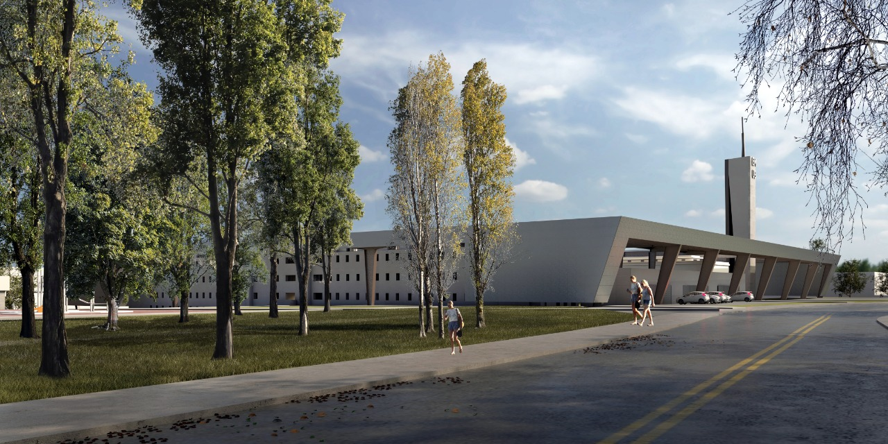
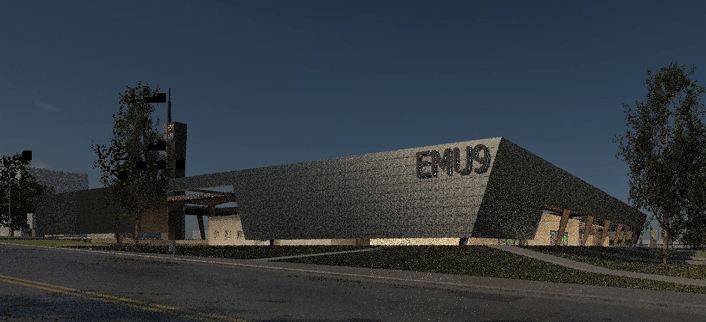
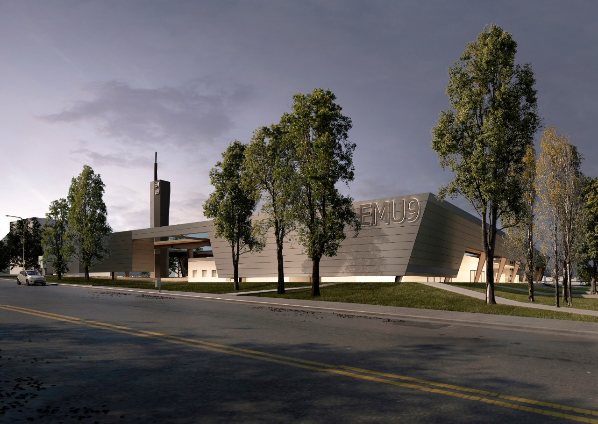

Neuquén deriva de su topografía y configura su forma urbana: «el bajo» a la par del Río y el «alto» sobre el sector norte de la ciudad a manera de «balcón». Nuestra propuesta recoge este dato y lo incorpora de manera consciente en el proyecto de Parque Urbano 🌳⠀ Las construcciones del sector, resultan de baja altura y consolidadas: área residencial como «fondo» de una figura emergente que constituye el Parque Urbano y Edificio Multipropósito «EMU9», que se enmarca en el sector 🏛🌳⠀ La visita al predio y la recorrida por el interior nos llevan a imaginar la posibilidad de redimir ese espacio de encierro y castigo en nuevos espacios ciudadanos dedicados a la recreación, la cultura y el deporte ⚽️🏀⠀ La idea de libertad 🙌⠀ La propuesta, en contraposición al uso preexistente y su estigma, apunta a la percepción y vivencia de la libertad como rasgo predominante del proyecto. La idea de parque urbano y edificio multipropósito es concebida como un todo comprensible siendo la cultura regional el soporte y materia de la nueva edificación. Se trata de un parque urbano con un edificio de gran pregnancia y jerarquía institucional, impregnado de cultura constructiva regional, austero y despojado de todo aditamento que implique mantenimientos especiales ✔⠀ Buscamos la diversidad de espacios que alberguen actividades deportivas, recreativas y culturales desarrolladas a corto, mediano y largo plazo, teniendo en cuenta el dinamismo de la sociedad y los cambios de necesidades que los habitantes demanden 🙌⠀ El resultado es algo que no se obtiene si se parte de cero, se aprovecha lo existente y se agrega algo nuevo 💎